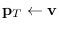
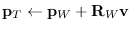

A viewing object manages viewing coordinate system
whose origin is located at the position of a virtual camera,
-z axis is oriented to the objects observed, and xy-plane is the
projection screen.
Since viewing inherits class cascaded-coords,
it accepts coordinates transformation message
such as :translate, :rotate and :transform.
Also, it can be attached to another object derived from cascaded-coords,
allowing the simulation of the camera-on-mobile-object system.
The main purpose of viewing is to transform vectors represented in the world
to the camera coordinates system.
The transformation is taken in the opposite direction against usual coordinate
transformation where vectors in the local coordinates are transformed into the
representation in the world.
Therefore, viewing holds the inversed left-handed transformation in
the viewcoords slot, which is usually referred as the viewing coordinate system.
Figure 13:
viewing coords and projection planes
|  |
viewing [class]
:super cascaded-coords
:slots (viewcoords)
-
- defines the viewing transformation.
:viewpoint [method]
-
-
returns the position vector of the origin of this viewing.
:view-direction [method]
-
-
returns the vector from the origin of the viewing to the center of screen.
This is the z-axis direction of the viewing coordinates.
:view-up [method]
-
-
returns y-axis vector of this viewing represented in the world coords.
Y-axis is the upward direction in the viewport.
:view-right [method]
-
-
returns x-axis vector of this viewing represented in the world coords.
X-axis is in horizontal direction to the right in the viewport.
:look from &optional (to #f(0 0 0)) [method]
-
-
:look conveniently sets the viewing coords as the eye is located
at from and looking at to point.

-
- Since viewing inherits cascaded-coords, all the :init parameters
such as :pos, :rot, :Euler, :rpy, etc. can be
used to specify the location and the orientation of the viewing coordinates.
However, viewing's :init provides easier way to determine the
rotation.
If only :target is given, view-line (-z axis) is determined to
pass the viewpoint and :target point, and the :view-right
vector is determined so that the x-axis is parallel to the xy-plane of the
world coordinates.
You may specify :view-direction instead of :target to get the
same effect.
If you give :view-up or :view-right parameter in addition to
:target or :view-direction,
you can determine all the three rotation parameters by yourself.
2016-03-23